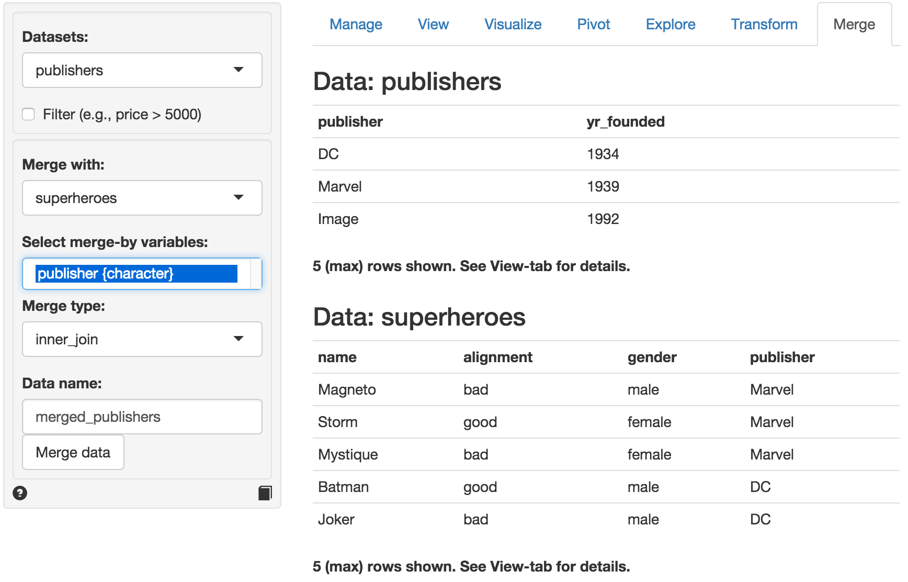
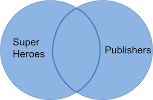

Data > Merge
Merge (join) two datasets
There are four merge options available in Radiant from the dplyr package developed by Hadley Wickham and Romain Francois on GitHub.
We will use two small datasets, superheroes and publishers, created by Jenny Bryan to illustrate the different merge / join types (see source information below).
| name | alignment | gender | publisher |
|---|---|---|---|
| Magneto | bad | male | Marvel |
| Storm | good | female | Marvel |
| Mystique | bad | female | Marvel |
| Batman | good | male | DC |
| Joker | bad | male | DC |
| Catwoman | bad | female | DC |
| Hellboy | good | male | Dark Horse Comics |
| publisher | yr_founded |
|---|---|
| DC | 1934 |
| Marvel | 1939 |
| Image | 1992 |
In the screen-shot of the Data > Merge tab below we see the two datasets. The tables share variable publisher that is automatically select for the merge / join. There are different ways to merge / join the data that we will discuss below.

Inner join (superheroes, publishers)
An inner join return all rows from x with matching values in y, and all columns from both x and y. If there are multiple matches between x and y, all match combinations are returned.
| name | alignment | gender | publisher | yr_founded |
|---|---|---|---|---|
| Magneto | bad | male | Marvel | 1939 |
| Storm | good | female | Marvel | 1939 |
| Mystique | bad | female | Marvel | 1939 |
| Batman | good | male | DC | 1934 |
| Joker | bad | male | DC | 1934 |
| Catwoman | bad | female | DC | 1934 |
In the table above we lose Hellboy because, although this hero does appear in superheroes, the publisher (Dark Horse Comics) does not appear in publishers. The join result has all variables from superheroes, plus yr_founded, from publishers. We can visualize an inner join with the venn-diagram below:

Notice that a join can change the row and variable order so you should not rely on these in an analysis. The command that Radiant uses internally is:
mergedata(dataset = "superheroes", dataset2 = "publishers", merge_vars = "publisher", merge_type = "left_join", merge_name = "merged_superheroes")The same result can be achieved with the following R-code:
merged_superheroes <- inner_join(superheroes, publishers, by = "publisher")Semi join (superheroes, publishers)
A semi join keeps only columns from x. Whereas an inner join will return one row of x for each matching row of y, a semi join will never duplicate rows of x.
| name | alignment | gender | publisher |
|---|---|---|---|
| Batman | good | male | DC |
| Joker | bad | male | DC |
| Catwoman | bad | female | DC |
| Magneto | bad | male | Marvel |
| Storm | good | female | Marvel |
| Mystique | bad | female | Marvel |
We get a similar table as with inner_join but it contains only the variables in superheroes. The command that Radiant uses internally is:
mergedata(dataset = "superheroes", dataset2 = "publishers", merge_vars = "publisher", merge_type = "semi_join", merge_name = "merged_superheroes")The same result can be achieved with the following R-code:
merged_superheroes <- semi_join(superheroes, publishers, by = "publisher")Left join (superheroes, publishers)
A left join returns all rows from x, and all columns from x and y. If there are multiple matches between x and y, all match combinations are returned.
| name | alignment | gender | publisher | yr_founded |
|---|---|---|---|---|
| Magneto | bad | male | Marvel | 1939 |
| Storm | good | female | Marvel | 1939 |
| Mystique | bad | female | Marvel | 1939 |
| Batman | good | male | DC | 1934 |
| Joker | bad | male | DC | 1934 |
| Catwoman | bad | female | DC | 1934 |
| Hellboy | good | male | Dark Horse Comics | NA |
We result table contains superheroes with variable yr_founded from publishers. Hellboy, whose publisher does not appear in publishers, has an NA for yr_founded. We can visualize a left join with the venn-diagram below:

The command that Radiant uses internally is:
mergedata(dataset = "superheroes", dataset2 = "publishers", merge_vars = "publisher", merge_type = "semi_join", merge_name = "merged_superheroes")The same result can be achieved with the following R-code:
merged_superheroes <- semi_join(superheroes, publishers, by = "publisher")Anti join (superheroes, publishers)
An anti join returns all rows from x without matching values in y, keeping only columns from x
| name | alignment | gender | publisher |
|---|---|---|---|
| Hellboy | good | male | Dark Horse Comics |
We now get only Hellboy and we do not get the variable yr_founded. We can visualize an anti join with the venn-diagram below:

Dataset order
Note that the order of the datasets matters for semi, left, and anti join. If we setup the Data > Merge tab as below the results are as follow:

Inner join (publishers, superheroes)
| publisher | yr_founded | name | alignment | gender |
|---|---|---|---|---|
| DC | 1934 | Batman | good | male |
| DC | 1934 | Joker | bad | male |
| DC | 1934 | Catwoman | bad | female |
| Marvel | 1939 | Magneto | bad | male |
| Marvel | 1939 | Storm | good | female |
| Marvel | 1939 | Mystique | bad | female |
Every publisher that has a match in superheroes appears multiple times, once for each match. Apart from variable order, this is the same result we had above.
Semi join (publishers, superheroes)
| publisher | yr_founded |
|---|---|
| Marvel | 1939 |
| DC | 1934 |
With semi join the effect of switching the dataset order is more clear. Even though there are multiple matches for each publisher only one is shown. Publisher Image is lost, because it is not in superheroes.
Left join (publishers, superheroes)
| publisher | yr_founded | name | alignment | gender |
|---|---|---|---|---|
| DC | 1934 | Batman | good | male |
| DC | 1934 | Joker | bad | male |
| DC | 1934 | Catwoman | bad | female |
| Marvel | 1939 | Magneto | bad | male |
| Marvel | 1939 | Storm | good | female |
| Marvel | 1939 | Mystique | bad | female |
| Image | 1992 | NA | NA | NA |
As before, we get first dataset back (here publishers) but not with added variables from superheroes dataset. Note that, in contrast to the inner join, publisher Image survives, even though no superheroes from Image appear in superheroes. As a result, Image has NAs for variables name, alignment, and gender.
Anti join (publishers, superheroes)
| publisher | yr_founded |
|---|---|
| Image | 1992 |
Only publisher Image is retained now and all variables in publishers.
Outer join (publishers, superheroes)
An outer join combines two data.frames, keeping rows and columns that appear in either. Note that this join is not currently available in dplyr.
| publisher | yr_founded | name | alignment | gender |
|---|---|---|---|---|
| Dark Horse Comics | NA | Hellboy | good | male |
| DC | 1934 | Batman | good | male |
| DC | 1934 | Joker | bad | male |
| DC | 1934 | Catwoman | bad | female |
| Image | 1992 | NA | NA | NA |
| Marvel | 1939 | Magneto | bad | male |
| Marvel | 1939 | Storm | good | female |
| Marvel | 1939 | Mystique | bad | female |
In this table we keep Hellboy (even though Dark Horse Comics is not in publishers) and Image (even though the publisher is not listed in superheroes) and get variables from both datasets. Observations without a match are assigned the value NA for variables from the other dataset. We can visualize an outer join with the venn-diagram below:

The command that Radiant uses internally is:
mergedata(dataset = "publishers", dataset2 = "superheroes", merge_vars = "publisher", merge_type = "outer_join", merge_name = "merged_superheroes")The same result can be achieved with the following R-code:
merged_superheroes <- merge(superheroes, publishers, by = "publisher", all = TRUE)or if you have the Radiant library loaded with:
merged_superheroes <- outer_join(superheroes, publishers, by = "publisher")Based on Cheatsheet for dplyr join functions by Jenny Bryan